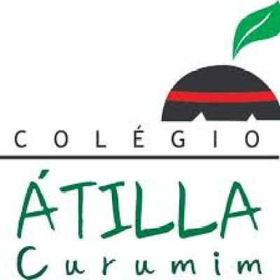

Armazém Curumim | Uma esperança que não vai perecer
Informação: Este Projeto é sediado no Jardim Jacira,Itapecerica da Serra,São Paulo,Brasil
Por Estudantes Atualmente (em 2026) no Quinto Ano, Nós somos Focados a dar as pessoas uma vida Melhor isso inclue doar Roupas em bom estado e etc...(Ex: Jaquetas, Blusas e Calças)
❤
Faça uma doação esquente um coração!

Agradecemos a colaboração